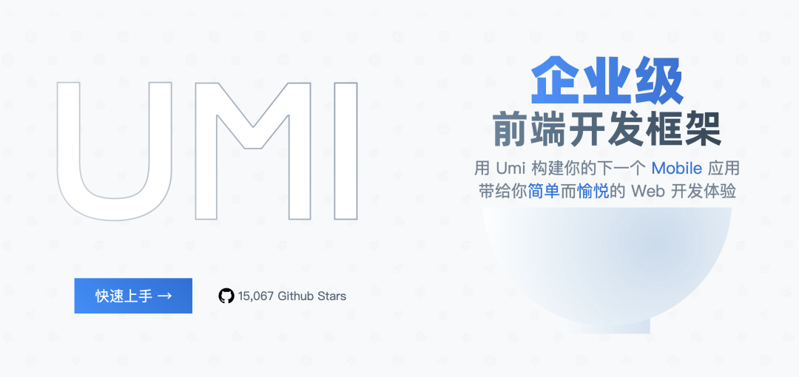
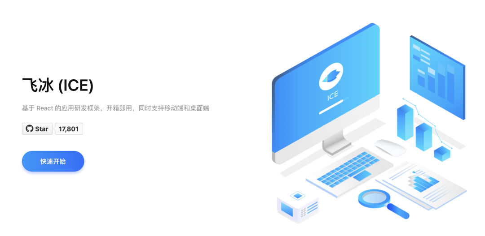

2024-07-15 10:13:28 · YinHao
今天来分享两个国产的企业级前端框架，开箱即用，更适合国内开发者！
Umijs 是一个由蚂蚁金服团队开发的可插拔的企业级 React 应用框架。它基于路由，支持类似 Next.js 的约定式路由，并且提供了丰富的插件体系，覆盖从源码到构建产物的每个生命周期，以支持各种功能扩展和业务需求。
Umi 的设计理念就是开箱即用，部分内置功能如下：
插件化：Umi 的整个生命周期都是插件化的，提供了大量内置插件，如微前端、国际化、权限、Antd 接入等。
开箱即用：Umi 内建了 React、React-Router 等库，开发者无需单独安装这些依赖即可启动开发。
约定式路由：Umi 支持类似 Next.js 的约定式路由，简化了路由配置，同时支持高级路由功能如权限路由、动态路由和嵌套路由。
高性能：通过插件支持 PWA、路由级别的代码分割等，以提高应用性能。
兼容性：基于 umi-plugin-polyfills，Umi 支持一键兼容到 IE9。
TypeScript 支持：Umi 提供了完善的 TypeScript 支持，包括.d.ts 定义和 umi test。
与 Dva 数据流融合：Umi 与 Dva 数据流框架深入融合，支持 Dva 的目录结构和模型自动加载等特性。
Github：https://github.com/umijs/umi
icejs 是由阿里巴巴淘系前端飞冰（ICE）团队开发的一款基于 React 的渐进式研发框架，它旨在服务于阿里内部以及社区用户，提供跨项目的一致性、降低重复劳作、以及低成本接入复杂功能的能力。
icejs 的主要特性包括：
支持 Vite 和 Webpack 构建模式，允许业务根据需要选择。
开箱即用的工程能力，例如 TypeScript、Webpack5、Vite、样式方案、Mock 等。
贴合业务的最佳实践，如目录规范、代码规范、路由方案、状态管理、数据请求等。
支持客户端渲染 SPA，服务端渲染 SSR 以及静态构建 SSG 等多种应用模式。
强大的插件能力，所有官方能力通过插件实现，业务可以通过插件扩展各种能力。
丰富的领域方案，如微前端解决方案 icestark、一体化方案、React Hooks 解决方案 ahooks、表单方案 Formily 等。